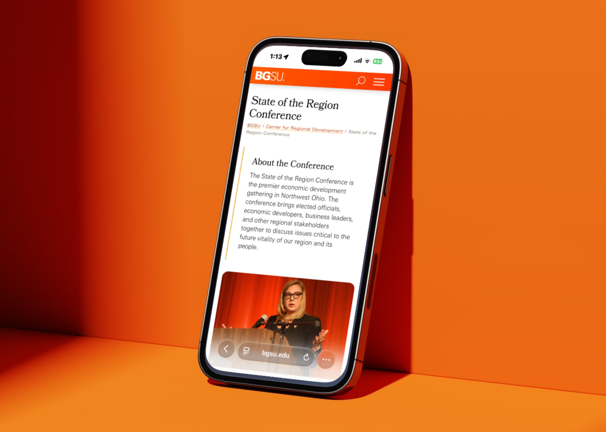
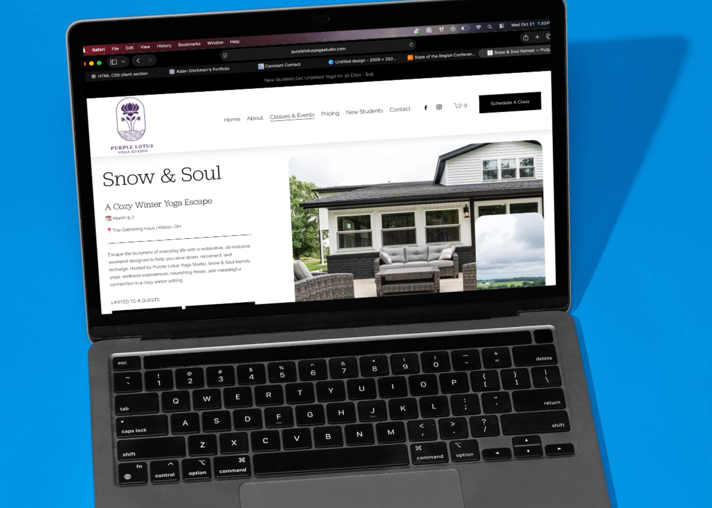
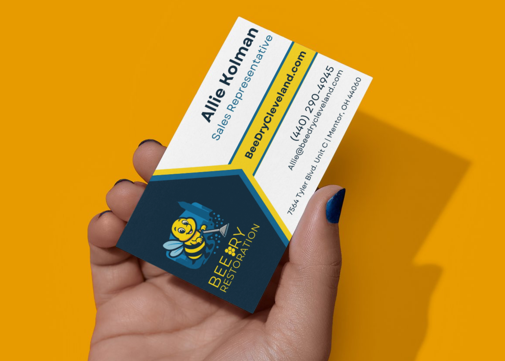
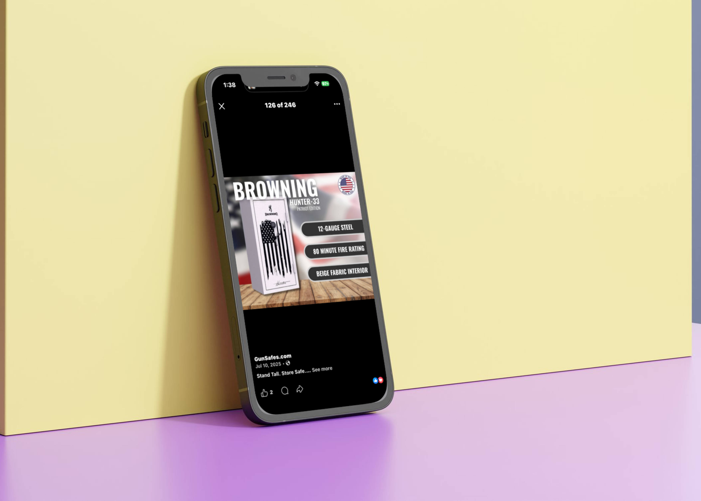
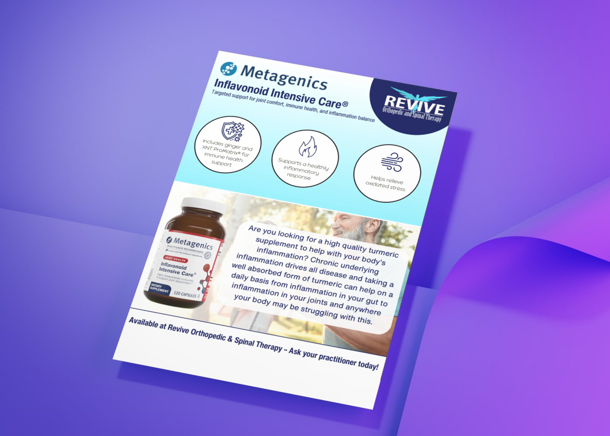
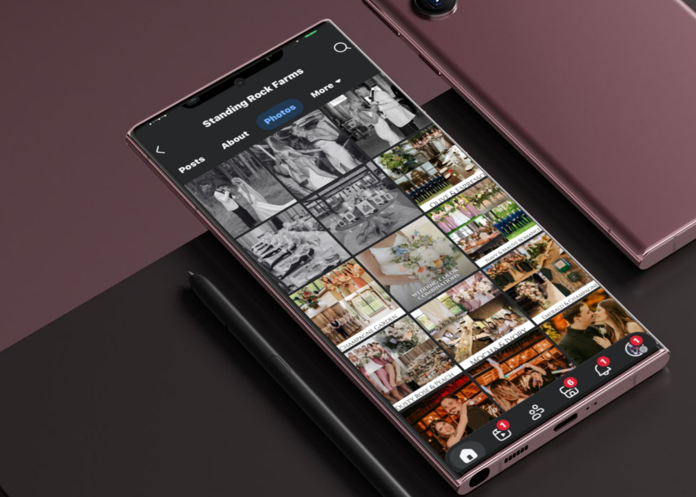

selected work

Bowling Green State University
↗worked under the center for regional development as a student intern creating prints, social graphics, and webpages to build northwest ohio's economic vitality
WEB DESIGN / PRINT DESIGN / GRAPHIC DESIGN
Danny G's
↗designed and developed entire website via Squarespace, helping grow danny g's presence online. created print-ready family-style menus.
WEB DESIGN / PRINT DESIGN / BRANDING
Purple Lotus Yoga Studio
↗updated website for new schedules and designed as well as developed dedicated page for annual yoga winter-themed retreat.
WEB DESIGN
Bee Dry Restoration
↗helped redesign webpages via Wordpress and business cards for company rebranding after splitting with 'all dry cleveland'
WEB DESIGN / PRINT DESIGN
GunSafes.com
↗produced a series stunning social graphics displaying gun safes on their online website to help grow social media presence.
GRAPHIC DESIGN / MARKETING
Revive Orthopedics
↗designed flyers displaying their in-store products as well as creating social media graphics for announcing new partnerships and products.
PRINT DESIGN / GRAPHIC DESIGN
Standing Rock Farms
↗designed social media graphics showing off their farm- themed wedding venues while sticking to brand guidelines.
GRAPHIC DESIGN